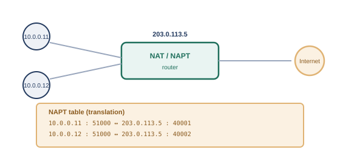

序章では、組織同士がネットワークでつながるようになると、「入れたくない相手を締め出す」という新しい悩みが生まれる様子を見てきました。つながること自体は便利ですが、あらゆる通信を無条件に受け入れてしまうと、悪意のある通信も素通りしてしまいます。そこで生まれたのが、通信を選別するという発想です。
ACLは、送信元IPアドレス・宛先IPアドレス・プロトコル（TCP/UDPなど）・ポート番号といった条件をもとに、「この条件に一致する通信は許可（permit）」「この条件に一致する通信は拒否（deny）」というルールを、上から順に並べたリストです。ルータやファイアウォールは、届いた通信を上から順にルールと照合し、最初に一致したルールに従って通信を通すか止めるかを決めます。
ここで注意が必要なのは、伝統的なACLの多くは、通信の「行き」と「帰り」を自動的には結び付けてくれない、ステートレス（状態を持たない）な仕組みだという点です。たとえば、社内からWebサーバーへのアクセスを許可するルールを作っただけでは不十分で、その応答（帰りの通信）を許可するルールも別途用意しないと、通信が成立しません。これに対し、現代のファイアウォールの多くは、「行きの通信を許可すれば、対応する帰りの通信は自動的に許可する」というステートフル（状態を保持する）な処理を備えており、設定の手間と安全性の両方が改善されています。
第4章では、192.168.x.xや10.x.x.xといったプライベートIPアドレスが、インターネットには直接ルーティングされないという話をしました。では、プライベートIPアドレスを持つ社内の機器は、どうやってインターネット上のサーバーと通信しているのでしょうか。ここで働いているのが、NAT（Network Address Translation、ネットワークアドレス変換）です※1。
NATには、大きく分けて2つの方式があります。1つは、プライベートIPアドレス1つに対して、グローバルIPアドレス1つを対応させるだけの、単純なNAT（Basic NAT）です。もう1つは、第7章で見たポート番号も組み合わせて変換する、NAPT（Network Address Port Translation）※1で、「IPマスカレード」とも呼ばれます。

NAPTでは、社内の機器がインターネットへ通信するたびに、「どのプライベートIPアドレス・ポート番号の組み合わせが、グローバル側のどのポート番号に対応しているか」という変換テーブルを、NATルータが動的に作成・管理します。この仕組みのおかげで、限られた数（多くの場合1個）のグローバルIPアドレスだけで、社内の多数の機器が同時にインターネットへアクセスできるようになります。
IPv4アドレスは32ビットの数値なので、表現できる組み合わせは約43億個しかありません。インターネットに接続する機器が世界的に増え続けた結果、この数では足りなくなる「IPv4アドレス枯渇」が現実の問題になりました。
NAPTによって、1つのグローバルIPアドレスを社内の多数の機器で共有できるようになりましたが、それでも「1契約に1つのグローバルIPアドレス」を割り当てるだけの数が、通信事業者側で足りなくなってきています。そこで登場したのが、CGNAT（Carrier-Grade NAT、キャリアグレードNAT）です。CGNATは、契約者の自宅ルータとインターネットの間に、通信事業者がもう1段階のNATを挟むことで、複数の契約者に、同じグローバルIPアドレスを（ポート番号を分け合う形で）共有させる仕組みです。契約者宅のルータとCGNAT設備の間では、100.64.0.0/10という、CGNAT専用に予約された共有アドレス空間が使われます※2。
CGNATは、枯渇問題への現実的な対処法である一方、契約者側からは「NATの中に、さらにNATがある」状態になるため、外部から契約者の機器へ直接アクセスする（特定のポート宛ての通信を外部から通せるようにする、いわゆるポート開放をする）ことが難しくなる、という副作用もあります。